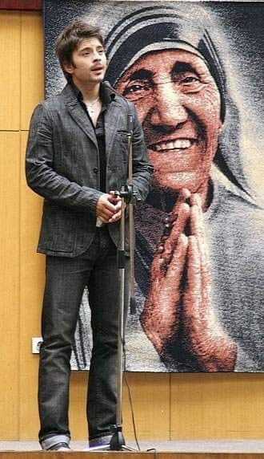
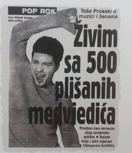
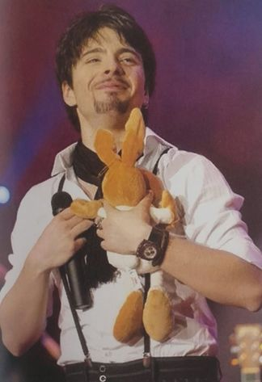
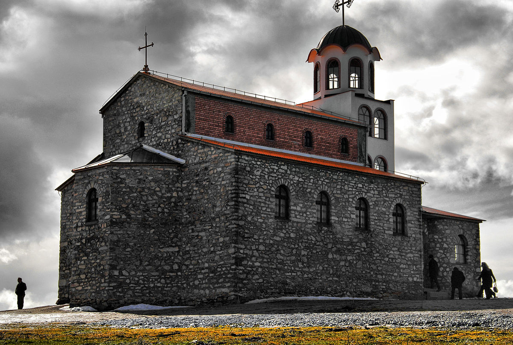

Тоше је пре свега био велики човек и хуманиста, а тек онда певач ван свог времена. Организовао је низ хуманитарних акција и бесплатних концерата за помоћ болесној деци, деци са посебним потребама и сиромашнима. О многим својим доброчинствима никада није јавно говорио. Поменућемо само нека од хуманих дела која су позната јавности.
Тоше је у децембру 2002. године одржао неколико концерата под називом ,,Са музиком за живот". Приход је дониран Дому за децу са посебним потребама ,,Мацал Чаров" , дому за децу без родитељског старања ,,11. октобар" у Скопљу и специјалном заводу.
2003. године, Тоше је добио награду Мајке Терезе за своја хумана дела.
Именован је УНИЦЕФ-овим амбасадором добре воље за цео регион. Тим поводом, заједно са дечјим збором ученика училишта деце са нарушеним видом "Димитар Влахов" је снимио песму "За овој свет", односно "This World", која је постала УНИЦЕФ-ова химна.
Приходима с концерата из 2004. и 2005. године Тоше је финансирао реновирање Клинике за дечије болести у Скопљу. Био је један од највећих донатора и заштитно лице кампање "Пријатељи Клинике за дечије болести."
Сав приход од концерта одржаног у сарајевској Скендерији 12. маја 2006. поклонио је за поновну изградњу "Дома младих". Тиме се одрекао хонорара свог првог солистичког концерта у част обнове ратом уништеног дома.
Медведиће које је добио од обожаватеља на концертима је поклонио дечијим болницама и дому за децу без родитеља.
 
Био је укључен у многе акције "Црвеног крста" међу којима је и " Даруј крв, буди хуман " у којој је давао крв и поручио свима: ,,Ја сам управо спасио живот, а ви?", као и у хуманитарну кампању "Космофон - Сите сме нивни деца " - организовану за помоћ старим људима.
Такође је својевољно финансирао крушевски манастир Свето Преображение на којем је чак и физички радио преко тринаест година.
Тоше Проески у манастиру Свето Преображение
"Не стидим се и част ми је да кажем да сам у овој цркви више пута радио и физичке послове и могу једино да се поносим тиме. Свој мир налазим овде и мислим да је ово суштина. Овде нема моје славе, нема популарности. Овде је мој мир и знам да ћу после свега да завршим овде. Мислим да је вера нешто што остаје доживотно."
 Почетак странице"За мене ће Тоше увек бити жив. Увек кад погледам у светло, бескрајно сам му захвална, јер да није било његове хуманости, можда бих живела у мраку. Зато ћу вечно носити успомену на њега", каже крушевчанка Љупка Талеска.
"Пресађивање рожнице ока у познатој руској болници "Фјодоров" за нас је била прескупа операција. Не бисмо могли скупити новац. Вест о мом проблему и проблему моје породице се брзо проширила кроз Крушево и тако је стигла и до Тошета. Одмах се ангажовао да нам помогне. Донације је обезбеђивао преко акција које је организирао са његовим друговима и колегама у скопским кафићима гдје је и сам, у улози келнера, привлачио младе", каже Љупка.
"Тоше, ти си мени дао живот. Шта сада ја да урадим да помогнем теби?!" - непрекидно је крај Тошетовог гроба понављао Тоше Илијев, дечак из Кочана коме је Тоше дао новац за операцију тумора на мозгу у Хановеру.
"Спасио је живот мом сину и то доброчинство му никада нећу заборавити"- кроз плач говори дечакова мајка Евгенија. "Тоше је један од најхуманијих људи у Македонији. Нема коме није помогао" - додаје дечаков отац Миле Илијев. "Помогао нам је када нам је било најтеже и спасио живот мом сину. Када смо скупљали паре за операцију, многи људи су нам дали колико су могли. Рекли су ми: „Зови и Тошета, он је много добар човјек“. Нисам га ни познавао, али чим је чуо о чему је реч, одмах је пристао. Одржао је хуманитарни концерт у Кочанима и сав приход дао за лејечење мог сина. Велики је човек био", рекао је Илијев.
Тоше је исплатио дуг од 1.150 марака колико је сиромашна породица Џомба из села Кукуље код Српца дуговала Клиничко-болничком центру у Бањалуци омогућивши им тако да остваре право на социјалну помоћ. Павле Џомба: "Захвалан сам Тошету који нам је много учинио па бисмо желели да га упознамо." Тоше Проески: "То је ситан новац за мене а овој несрећној породици много је значио."
На последњем тузланском концерту, Тоше је мојој супрузи Мерими која је болесник од тумора мозга певао на мој мобилни "Зајди, Зајди" јер није могла доћи на концерт. Он је певао а ја сам плакао од туге и среће. Ставио је осмех на лице моје супруге, на моје и нас многих то вече" - рекао је Наид Џанановић.
Учествовао је у акцији ,,Буди ми пријатељ" у склопу које је помагао деци без родитеља у Египатском селу у Мостару. Такође, сиромашној деци је држао бесплатне часове певања и музике.
Почетак странице